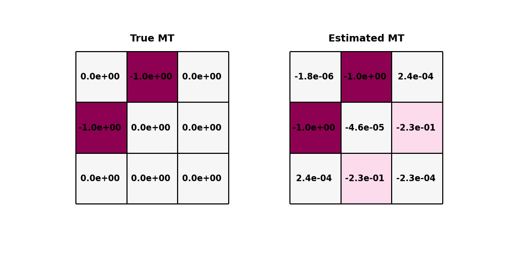
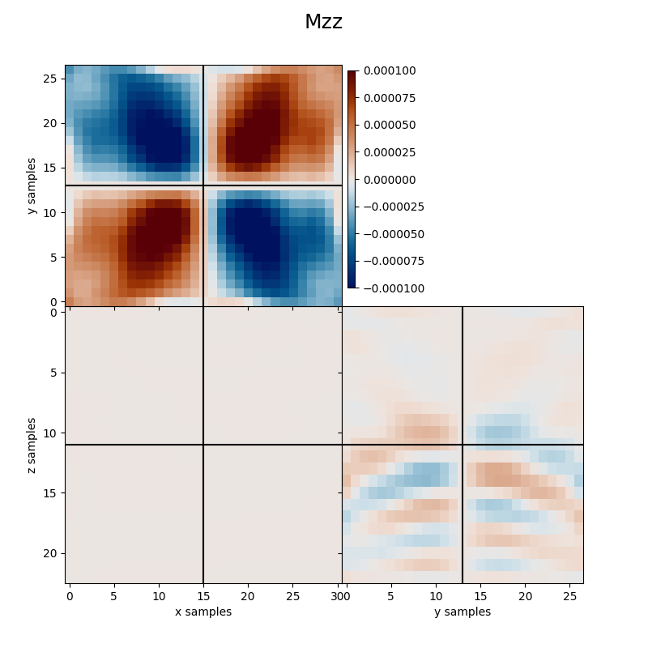
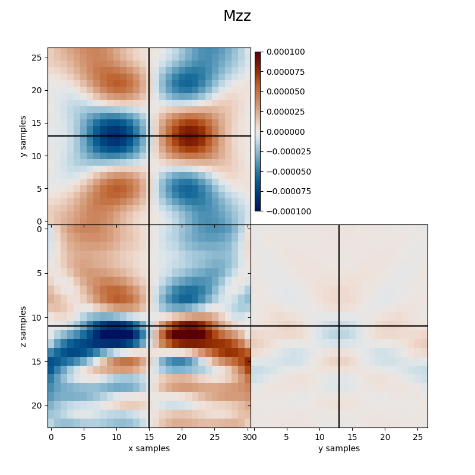

Note
Go to the end to download the full example code.
3.2 Waveform-based Moment Tensor Inversion - Multicomponent#
This is a follow-up of the Amplitude-based Moment Tensor Inversion tutorial. In this tutorial, we will extend the MT inversion algorithm to work directly with waveforms instead of picked amplitudes. By avoiding any picking, this method can determine the moment tensor of a microseismic source when the source location is not known a-prior. As such, it can be considered a joint location and MT inversion algorithm.
We will start once again from the far-field particle velocity expression from a moment tensor source in a homogeneous full space (from eq. 4.29, Aki and Richards) - see the Amplitude-based Moment Tensor Inversion tutorial for more details.
However, in comparison to the Amplitude-Based Moment Tensor Inversion tutorial, in this waveform-based approach we assume a distributed source within a subsurface area of interest and use the following integral relation to reconstruct the surface data:
where \(M_{pq}\) with \(p,q=1,2,3\) are the so-called MT kernels and \(G_{pq}\) are the so-called Green’s functions, whose high-frequency approximation can be written as:
Here \(a_{pq}\) with \(p,q=1,2,3\) represent the same coefficients used in the Amplitude-based Moment Tensor Inversion tutorial.
To summarize, we will apply the following workflow:
Load model and data;
Compute the traveltimes & ray angles
Compute the Greens functions for the subsurface area of interest
Define the Kirchhoff-MT operator
Jointly solve for the location and MT with a least-squares solver
Assumptions: for now, the MTWI procedure assumes a homogeneous velocity model.
import os
import numpy as np
import matplotlib.pyplot as plt
import fracspy
from pylops.utils.wavelets import ricker
from fracspy.utils.sofiutils import read_seis
from fracspy.mtinversion.utils import get_mt_max_locs, get_mt_at_loc
from fracspy.mtinversion.mtwi import *
Load model and seismic data#
For this example, we will use a toy homogenous model with a gridded surface receiver array. The data are modelled using the SOFI3D Finite Difference modelling software. The model is the same that we have used in the FD modelling to generate the data. As such, it contains additional boundaries, which we need to remove prior to performing localisation.
# Directory containing input data
input_dir = '../data/pyfrac_SOFIModelling'
# Model parameters
abs_bounds = 30
dx = dy = dz = 5
nx = 112
ny = 128
nz = 120
# Modelling parameters
dt = 1e-3 # SOFI3D Time sampling rate
t_shift = 167 # Time shift required to align FD data to zero time for Kirchhoff operators
tdur = 500 # Recording duration
# Load model
mod_w_bounds = np.fromfile(os.path.join(input_dir,'inputs',
'models',
'Homogeneous_xyz.vp'),
dtype='float32').reshape([nx, ny, nz])
# Load receiver geometry
recs_xzy = np.loadtxt(os.path.join(input_dir,'inputs',
'griddedarray_xzy_20m.dat')).T
nr = recs_xzy.shape[1]
# Load seismic data (note that Vz is Vy given the SOFI convention)
expname = 'MT-90-90-180_Homogeneous_griddedarray'
vx = read_seis(os.path.join(input_dir, 'outputs', 'su', '%s_vx.txt' % expname), nr=nr)
vy = read_seis(os.path.join(input_dir, 'outputs', 'su', '%s_vz.txt' % expname), nr=nr)
vz = read_seis(os.path.join(input_dir, 'outputs', 'su', '%s_vy.txt' % expname), nr=nr)
vx = vx[:,t_shift:t_shift+tdur]
vy = vy[:,t_shift:t_shift+tdur]
vz = vz[:,t_shift:t_shift+tdur]
# Scale data to the maximum of vz
efd_scaler = np.max(abs(vz))
vx /= efd_scaler
vy /= efd_scaler
vz /= efd_scaler
# Combine into a single array
FD_data = np.array([vx, vy, vz])
# Remove absorbing boundaries for both the model and receiver coordinates
mod = mod_w_bounds[abs_bounds:-abs_bounds, abs_bounds:-abs_bounds, :-abs_bounds] # z has free surface
nx, ny, nz = mod.shape
x, y, z = np.arange(nx)*dx, np.arange(ny)*dy, np.arange(nz)*dz
recs = np.array([recs_xzy[0]-(abs_bounds*dx), recs_xzy[2]-(abs_bounds*dx), recs_xzy[1]])
Let’s now double-check that the data has been loaded correctly. Observe the changes in polarity across the traces, this is the information that we utilise to determine the Moment Tensor.
fig, axs = plt.subplots(3, 1,figsize=[10, 8])
axs[0].imshow(vx.T, aspect='auto',cmap='binary_r')
axs[1].imshow(vy.T, aspect='auto',cmap='binary_r')
axs[2].imshow(vz.T, aspect='auto',cmap='binary_r')
plt.tight_layout()
Create modelling operator#
First, we will define a Ricker wavelet with peak frequency of 20Hz. This is the same wavelet that we used in modelling; in real applications, this will need to be estimated from the data.
Second we define an area of interest where we expect the source to be located. In fact, whilst in practice one could consider the entire subsurface, this comes with a computational and storage burden for the Green’s functions.
sx = nx // 2
sy = ny // 2
sz = 2 * nz // 3
sloc_ind = [sx, sy, sz]
hwin_nx_aoi, hwin_ny_aoi, hwin_nz_aoi = 15, 13, 11 # half window lengths in x, y, z
winc_x, winc_y, winc_z = nx // 2, ny // 2, 2 * nz // 3 # Center points of the area of interest
# Defining area of interest
xsi, xfi = winc_x-hwin_nx_aoi, winc_x+hwin_nx_aoi+1 # start/end index of x-region of interest
ysi, yfi = winc_y-hwin_ny_aoi, winc_y+hwin_ny_aoi+1 # start/end index of y-region of interest
zsi, zfi = winc_z-hwin_nz_aoi, winc_z+hwin_nz_aoi+1 # start/end index of z-region of interest
nx_aoi = xfi - xsi
ny_aoi = yfi - ysi
nz_aoi = zfi - zsi
# MT in area of interest
MT_aoi = np.zeros([6, nx_aoi, ny_aoi, nz_aoi]) # MT components as images
MT_selected = -1 * np.array([0,0,0,1,0,0])
MT_aoi[:, nx_aoi//2, ny_aoi//2, nz_aoi//2] = MT_selected
Next, we create our Kirchhoff-MT operator
Ms_scaling = 1.92e10
mtw = MTW(x, y, z, recs, mod, sloc_ind,
2, omega_p, (hwin_nx_aoi, hwin_ny_aoi, hwin_nz_aoi),
t, wav, wavc, multicomp=True,
Ms_scaling=Ms_scaling,
engine='numba')
data = mtw.model(MT_aoi)
# Visualization
for ivc, vc in enumerate([vx, vy, vz]):
fig, axs = plt.subplots(1, 3, figsize=[15,5],
sharey=True, sharex=True)
axs[0].imshow(data[ivc].T, aspect='auto',cmap='RdBu')
axs[1].imshow(vc.T, aspect='auto',cmap='RdBu')
axs[2].imshow(data[ivc].T-vc.T, aspect='auto',cmap='RdBu')
axs[2].set_ylim([350,270])
axs[2].set_xlim([0,20])
for ax in axs: ax.axhline(300)
fig.tight_layout()
fig, axs = plt.subplots(1,2, figsize=[15,5], sharey=True)
axs[0].plot(data[ivc, 0], 'k', label='FD')
axs[0].plot(vc[0], 'r', label='Kirch')
axs[0].legend()
axs[1].plot(data[ivc, 20], 'k')
axs[1].plot(vc[20], 'r')
fig.tight_layout()
- 
- 

Joint localisation and MT inversion#
Finally, we are ready to invert our waveform data for the 6 MT kernels.
LSQR Least-squares solution of Ax = b
The matrix A has 214500 rows and 115506 columns
damp = 0.00000000000000e+00 calc_var = 0
atol = 0.00e+00 conlim = 1.00e+08
btol = 0.00e+00 iter_lim = 100
Itn x[0] r1norm r2norm Compatible LS Norm A Cond A
0 0.00000e+00 2.674e+01 2.674e+01 1.0e+00 3.8e+02
1 -1.34479e-06 1.647e+01 1.647e+01 6.2e-01 4.3e-01 1.3e+04 1.0e+00
2 -1.12899e-06 1.098e+01 1.098e+01 4.1e-01 2.5e-01 1.5e+04 2.5e+00
3 2.85393e-07 9.598e+00 9.598e+00 3.6e-01 1.8e-01 1.8e+04 3.8e+00
4 2.15309e-06 8.569e+00 8.569e+00 3.2e-01 2.0e-01 2.0e+04 5.6e+00
5 3.08077e-06 7.905e+00 7.905e+00 3.0e-01 8.0e-02 2.4e+04 7.9e+00
6 2.41881e-06 7.350e+00 7.350e+00 2.7e-01 7.7e-02 2.5e+04 1.0e+01
7 1.33417e-06 7.097e+00 7.097e+00 2.7e-01 8.9e-02 2.6e+04 1.2e+01
8 -6.59734e-08 6.827e+00 6.827e+00 2.6e-01 6.1e-02 2.9e+04 1.5e+01
9 -8.32663e-07 6.714e+00 6.714e+00 2.5e-01 3.7e-02 3.1e+04 1.7e+01
10 -1.33084e-06 6.651e+00 6.651e+00 2.5e-01 4.3e-02 3.3e+04 1.9e+01
90 1.01378e-05 4.444e+00 4.444e+00 1.7e-01 2.9e-03 9.0e+04 6.3e+02
91 1.03259e-05 4.441e+00 4.441e+00 1.7e-01 2.9e-03 9.1e+04 6.4e+02
92 1.08270e-05 4.434e+00 4.434e+00 1.7e-01 2.7e-03 9.1e+04 6.5e+02
93 1.11654e-05 4.429e+00 4.429e+00 1.7e-01 2.8e-03 9.2e+04 6.6e+02
94 1.13276e-05 4.427e+00 4.427e+00 1.7e-01 3.5e-03 9.2e+04 6.6e+02
95 1.18840e-05 4.418e+00 4.418e+00 1.7e-01 2.9e-03 9.3e+04 6.8e+02
96 1.21480e-05 4.414e+00 4.414e+00 1.7e-01 3.3e-03 9.3e+04 6.9e+02
97 1.29290e-05 4.404e+00 4.404e+00 1.6e-01 5.1e-03 9.3e+04 7.0e+02
98 1.32693e-05 4.399e+00 4.399e+00 1.6e-01 3.4e-03 9.4e+04 7.1e+02
99 1.37259e-05 4.393e+00 4.393e+00 1.6e-01 2.8e-03 9.5e+04 7.3e+02
100 1.40819e-05 4.386e+00 4.386e+00 1.6e-01 5.7e-03 9.5e+04 7.4e+02
LSQR finished
The iteration limit has been reached
istop = 7 r1norm = 4.4e+00 anorm = 9.5e+04 arnorm = 2.4e+03
itn = 100 r2norm = 4.4e+00 acond = 7.4e+02 xnorm = 2.1e-02
Let’s now extract both the expected location and MT source parameters
exp_sloc, _ = get_mt_max_locs(mt_inv)
print('Expected Source Location (AOI coord. ref.): \n', exp_sloc)
mt_at_loc = get_mt_at_loc(mt_inv / np.abs(mt_inv).max(), [int(exp_sloc[0]), int(exp_sloc[1]), int(exp_sloc[2])])
print('MT at expected Source Location (full): \n', mt_at_loc)
print('MT at expected Source Location (rounded): \n', np.round(mt_at_loc, decimals=2))
mt_at_loc = get_mt_at_loc(mt_inv / np.abs(mt_inv).max(), [sloc_ind[0]-xsi, sloc_ind[1]-ysi, sloc_ind[2]-zsi])
print('MT at true Source Location (full): \n', mt_at_loc)
print('MT at true Source Location (rounded): \n', np.round(mt_at_loc, decimals=2))
Expected Source Location (AOI coord. ref.):
[13.94 12.7 11.32]
MT at expected Source Location (full):
(0.032167409144727495, 0.07879811563715645, 0.051881040398387375, 0.014743971157421468, -0.2683915865820688, -0.6145561946045404)
MT at expected Source Location (rounded):
[ 0.03 0.08 0.05 0.01 -0.27 -0.61]
MT at true Source Location (full):
(-0.0019573553987442447, 0.01409416978624956, -0.011238380751432244, -0.05093337723466572, -0.03673497317194854, -0.1457423269817509)
MT at true Source Location (rounded):
[-0. 0.01 -0.01 -0.05 -0.04 -0.15]
And finally we visualize the estimated kernels both from the adjoint and inverse approaches.
clim = 5e-4
fracspy.visualisation.eventimages.locimage3d(mt_inv[0], int(exp_sloc[0]), int(exp_sloc[1]), int(exp_sloc[2]), clipval=[-clim, clim])
fracspy.visualisation.eventimages.locimage3d(mt_inv[1], int(exp_sloc[0]), int(exp_sloc[1]), int(exp_sloc[2]), clipval=[-clim, clim])
fracspy.visualisation.eventimages.locimage3d(mt_inv[2], int(exp_sloc[0]), int(exp_sloc[1]), int(exp_sloc[2]), clipval=[-clim, clim])
fracspy.visualisation.eventimages.locimage3d(mt_inv[3], int(exp_sloc[0]), int(exp_sloc[1]), int(exp_sloc[2]), clipval=[-clim, clim])
fracspy.visualisation.eventimages.locimage3d(mt_inv[4], int(exp_sloc[0]), int(exp_sloc[1]), int(exp_sloc[2]), clipval=[-clim, clim])
fracspy.visualisation.eventimages.locimage3d(mt_inv[5], int(exp_sloc[0]), int(exp_sloc[1]), int(exp_sloc[2]), clipval=[-clim, clim])
- 


(<Figure size 800x800 with 5 Axes>, (<Axes: xlabel='x samples', ylabel='z samples'>, <Axes: xlabel='y samples'>, <Axes: ylabel='y samples'>))
Total running time of the script: (2 minutes 4.823 seconds)